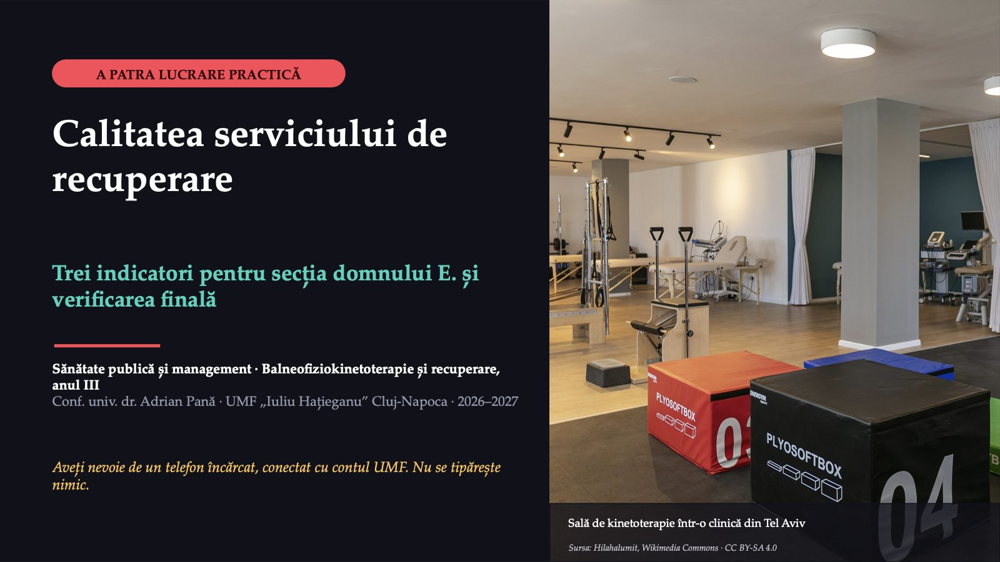
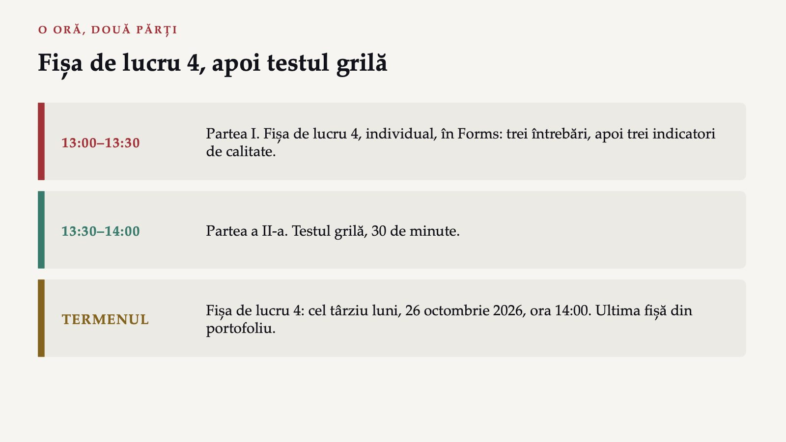
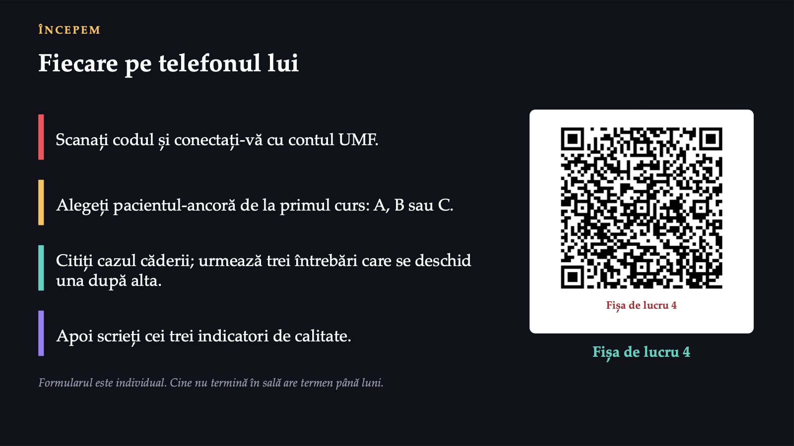
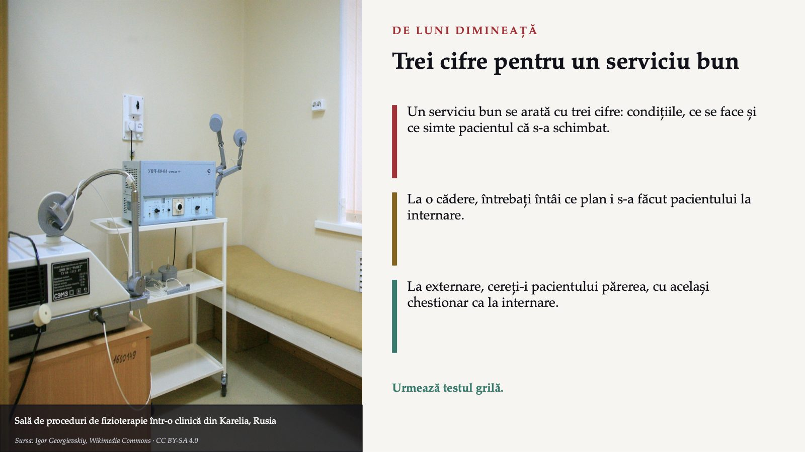
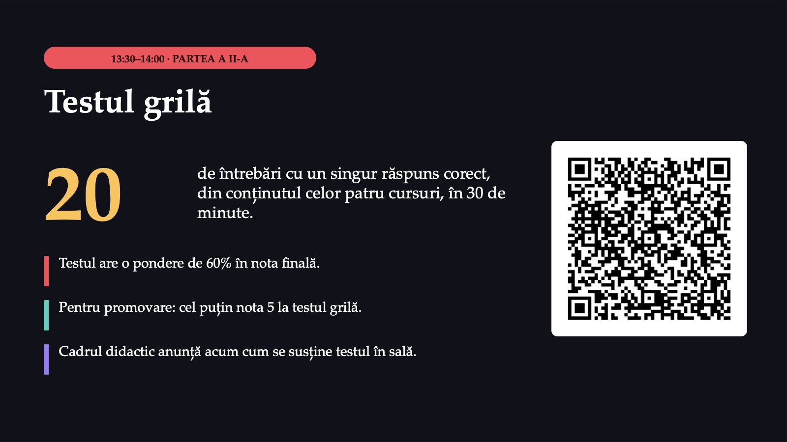

Calitatea serviciului de recuperare

1 / 12Fișa de lucru 4, apoi testul grilă

2 / 12Fiecare pe telefonul lui

3 / 12O cădere în a cincea noapte
![PARTEA I · CAZUL CĂDERII O cădere în a cincea noapte RAPORT DE EVENIMENT · SECȚIA DE RECUPERARE Pacientul: domnul E., operat pentru fractură de șold. Evenimentul: în a cincea noapte s-a ridicat singur să meargă la toaletă, fără cadrul de mers, și a căzut. La internare: scala de risc de cădere, completată; niciun plan stabilit pe baza ei. Caz construit în scop didactic. A doua zi, medicul-șef întreabă Secția devine, de la o lună la alta, mai sigură sau mai puțin sigură? Pacienții ei pleacă acasă funcționând mai bine?](diapozitive/LP04/004.jpg) 4 / 12
4 / 12Structură, proces, rezultat
![MODELUL LUI DONABEDIAN Structură, proces, rezultat STRUCTURĂ Condițiile în care se lucrează: oameni, calificări, spații, echipamente. Cu ce și cu cine lucrează serviciul. PROCES Ce se face cu pacientul: dacă acțiunile care definesc o îngrijire bună chiar se fac. Ce face serviciul și dacă face ce trebuie. REZULTAT Ce se întâmplă cu pacientul: dacă serviciul îl ajută să trăiască și să funcționeze mai bine. Ce s-a schimbat la pacient. Fiecare indicator se scrie ca la lucrarea practică a treia: numărător, numitor, sursă și frecvență.](diapozitive/LP04/005.jpg) 5 / 12
5 / 1270%
 6 / 12
6 / 12Ce spune pacientul
![Aparate de exerciții într-un parc Sursa: Rodhullandemu, Wikimedia Commons · CC BY-SA 4.0 REZULTATUL RAPORTAT DE PACIENT Ce spune pacientul Spus de pacient pe un chestionar standardizat, nu măsurat de terapeut: cum își vede simptomele și funcționarea. Rezultat: „Cât de ușor urcați acum scările?” Experiența îngrijirii: „Ați primit la externare explicații despre exercițiile de acasă?” Domnul E. spunea la externare că îi este frică să iasă singur din casă. Indicator posibil: pacienții care declară, la trei luni, că pot ieși singuri din casă. Limita: numără numai pacienții care răspund.](diapozitive/LP04/007.jpg) 7 / 12
7 / 12Trei întrebări, una după alta
![FORMULARUL · VOT PRIMA SECȚIUNE A FORMULARULUI Trei întrebări, una după alta 1 Ce tip de indicator? Proporția fizioterapeuților cu autorizație de liberă practică avizată pentru anul în curs. 2 Ce tip de indicator? Ponderea pacienților care au primit la externare un program scris de exerciții pentru acasă. 3 Rezultat raportat de pacient? Care dintre patru întrebări măsoară un rezultat raportat de pacient. Cum merge: fiecare întrebare se deschide după răspunsul corect la cea dinainte; după fiecare, distribuția răspunsurilor și un minut de explicație.](diapozitive/LP04/008.jpg) 8 / 12
8 / 12Rezolvarea se vede în formularul fișei, după ce o predați.
Rezolvarea se vede în formularul fișei, după ce o predați.
Trei indicatori pentru pacientul vostru
![LUCRU INDIVIDUAL A DOUA SECȚIUNE A FORMULARULUI Trei indicatori pentru pacientul vostru Tipul Numele Numărătorul Numitorul Sursa Frecvența Structură Proces Rezultat, raportat de pacient Serviciul: pacienta A, ambulatoriul de recuperare; pacientul B și pacienta C, secția de recuperare. Trei confuzii: numărul ședințelor (activitate) trecut ca indicator de calitate; rezultatul măsurat de terapeut trecut ca raportat de pacient; numărător și numitor din populații sau perioade diferite. Termenul: luni, 26 octombrie 2026, ora 14:00.](diapozitive/LP04/010.jpg) 10 / 12
10 / 12Trei cifre pentru un serviciu bun

11 / 1220

12 / 12Săgeți sau spațiu: navigare · O: vedere de ansamblu · N: notele prezentatorului · F: ecran complet · Esc: închidere